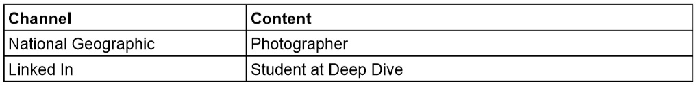

Wyatt Salmons'
Professional Development
Last Update: 1/29/19
Career Buddy: Scott Wells

Quantitative Accomplishments
- 4 Years of High Volume EMS Experience
- 5 Years of Critical Thinking Oriented Drafting Experience
- 6 years of professional and unprofessional photography experience
Qualitative Accomplishments
- Critical Thinking Skills
- Able to solve complex problems
- Also tends to over-think, or bite off too much
- Decision Making Skills
- Comfortable taking charge and leading
- May butt heads with other decision makers
- Fast Paced
- Able to complete work quickly
- Not detail oriented, hasty
Whole Brain Paragraph
I love to refinish/build furniture. I have sold many pieces of high quality furniture. But it requires development and use of the left and right brain. The left brain is able to calculate cost/return, quantities, time constraints and schedules, and procedures. The right brain is required to judge appearance, colors, creativity and new approaches, and style. The end result is what my left and right brain have settled to have an economically produced, high quality product.
Golden Circle
- Why: I have a passion for dynamic mobile web applications.
- How: Coding Skills
- What: I would love to develop work on mobile web applications.
Elevator Pitch
Hi, my name is Wyatt. I help develop a mobile web application. I am doing this at work, with coding skills I developed after taking the Deep Dive Coding Bootcamp. Do you work in mobile app development?
Weekly Reflections
Week 1:
Wow.
This week has been amazing! I have met many awesome, like minded people with tons of great interests. I can't
believe how much I have learned, both in class and on my own. I went from writing 'hello world' programs to building databases,
researching data design, and writing web pages. I even had some time to think introspectively to reflect on
my career goals. I also was able to attend a meeting that showcased a local technology leader, and was interested in
what he and his team was involved on, specifically the AI software able to track firearms in security feed, real time.
I could not be happier this week!😁
Week 2:
This week has been a disaster. I was able to complete all of my work early on monday given it was a holiday, and I am very thankful for that because I had an unexpected setback with my computer. It would not turn on in class on Tuesday, and left me high and dry. I was able to leave for a short period of time to find a replacement, but the machine is sub optimal, and it is very tedious to work on. Additionally the extra time it took to set up the toolset also took its toll on my work!
I am not breezing through this week like I was last week. Information is coming at me very quickly, and I am learning it very slowly. Object Oriented Programming is not a simple thing to learn. PHP is hard. Javascript is hard. I feel like a crazy person because I go from very happy and excited when things work to just doomed and frustrated when things are broken or I'm not understanding fundamental information. Lectures are hard to understand because they move very quickly and the vocabulary is foreign. I cannot ask for help very well, because I don't know what I don't know. Last week I was excited about what I was learning... this week I dread it, because every time I make progress, it feels like the last time.
On the other hand, the tech demo was awesome. I loved seeing what everyone was doing, and it gave me a moral boost, and kind of told me the "You can do it!" I needed. My favorite app was the one that saved clips from Podcasts so you could send them to your friends.
Week 3:
I am feeling more confident in myself and my ability to learn since working on the CSS. I feel maybe I should focus on what I am picking up easily to avoid getting discouraged. However, even basic JavaScript functions seem to lose me. I really need to be focusing on javascript but I dont even want to look at it :(.
I am feeling more confident in myself and my ability to learn since working on the CSS. I feel maybe I should focus on what I am picking up easily to avoid getting discouraged. However, even basic JavaScript functions seem to lose me. I really need to be focusing on javascript but I dont even want to look at it ☹. The capstone project is coming along ok. I wonder frequently if we are biting off too much or too little. All I can do is push forward, and not think about it too hard.
Geeksquad seems to feel really comfortable taking their sweet time with my computer. At this point I almost dont really want it back. This new computer, despite being a step down model, has really grown on me, and I think I will use it as my main box for now. I guess there is no harm keeping the old one as a backup? If it ever comes back...?
I liked the generated art demo on Friday, but I feel watching all these awesome demos just tend ot make me feel bad about struggling with making a simple website work. I feel like I'm so lost right now, nobody would ever want to hire me. I dont think I'm really making much progress this week.
Identity Chart
Visual Speaks